핵심 철학
관절·근육 자극을 통한 신경 치료 — 모든 테크닉의 공통 작용 기전.
본 강의의 근간
모든 카이로프랙틱 테크닉(Diversified · Gonstead · Thompson · Activator · Cox · Logan · SOT · CBP 등)의 공통 작용 기전은 환자의 관절과 근육을 자극하여 치료가 되는 방향으로 신경을 자극·조절하는 데 있다.
따라서 Chiropractic Functional Neurology는 모든 테크닉의 이론적 교차점이자 임상 판단의 기준이 된다.
임상 워크플로우 (뼈대)
자극의 스펙트럼
역사와 창시자
1895년부터 현대까지 — 카이로프랙틱을 만든 사람들.
1895년 9월 18일, 창시의 순간
[TODO: D.D. Palmer의 첫 교정 사건을 역사적 사실로만 기술. Harvey Lillard 청각 회복 서사는 신화로 구분 언급.]
창시자와 주요 인물 갤러리
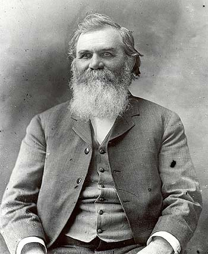
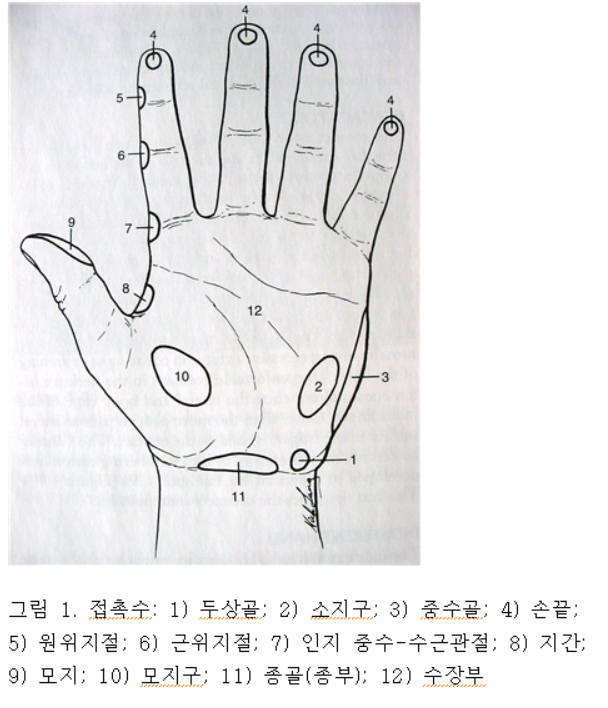
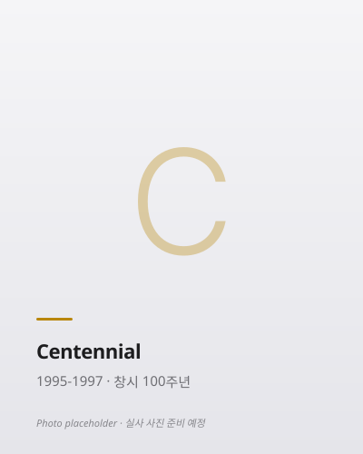
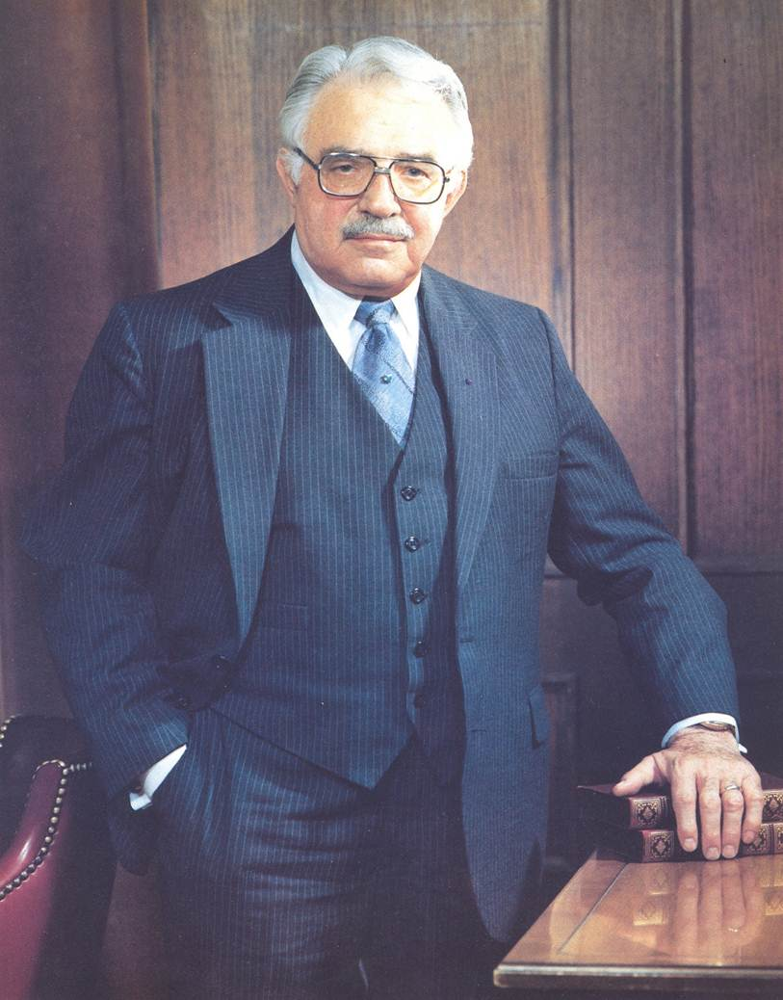
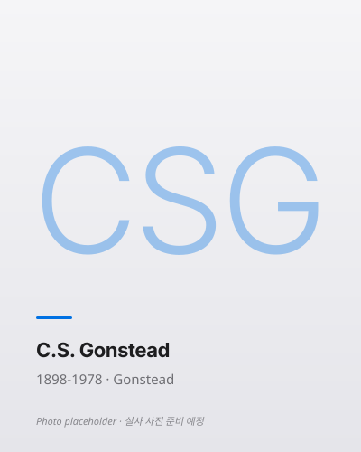
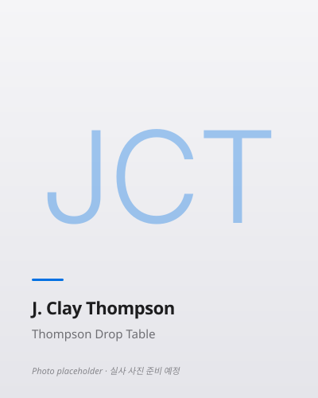
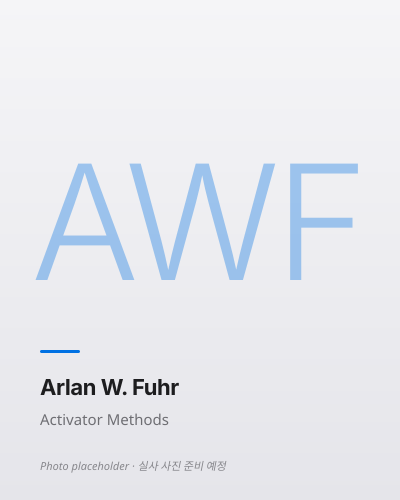
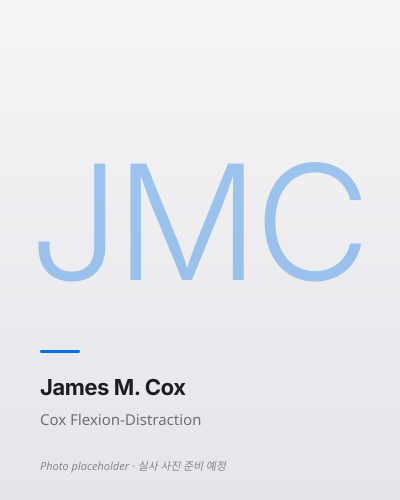
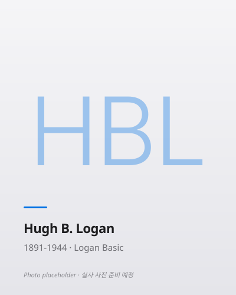
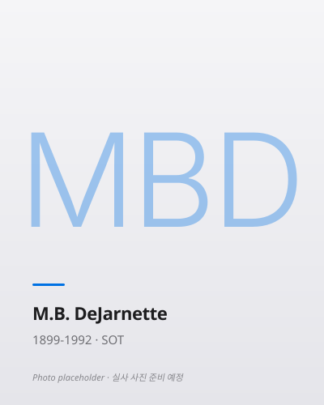
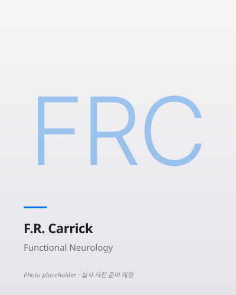
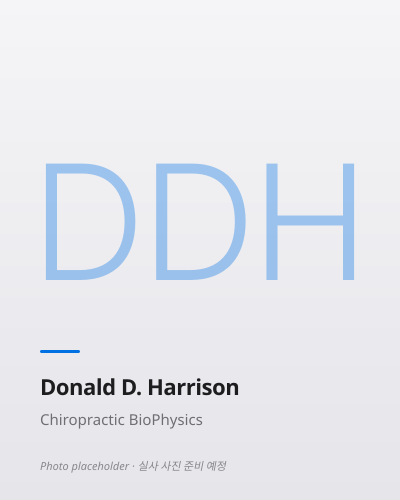
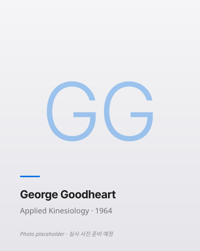
교육 기관 연혁
📊 자산 준비 현황
각 챕터의 강의록·팟캐스트·영상·슬라이드·리포트 준비 상태. ✅ 준비 완료 · ⏳ 생성 예정.
현재 상태
총 121/121개 NotebookLM 아티팩트 + 11개 챕터 MD + 12개 HTML 준비 완료. 나머지는 Google 할당량 리셋 후 점진 채워집니다.
서설
카이로프랙틱 역사·철학·원칙
Functional Neurology
⭐ 진단·치료·평가의 근간
Diversified HVLA
미국 DC 95.9% 사용 · 기본기
Gonstead Technique
5 Components · X-ray listing
Toggle Recoil (HIO)
상부경추 특이 · 🔴 HIO 비판
Thompson
드롭 테이블 · Derifield leg check
Activator Methods
기구 교정 · NIH grant 수혜
Cox Flexion-Distraction
척추 감압 · 디스크·신경근증
Logan Basic
천골 저강도 · 임산부·소아
Sacro-Occipital Technique
Category I/II/III · 🔴 Cranial 비판
Harrison CBP
수학 기반 · Mirror Image® · Denneroll
Applied Kinesiology
MMT · 🔴 AK 확장 진단 근거 없음
전체 커리큘럼
각 챕터는 강의록(HTML·MD) · PPTX · 동영상 · 팟캐스트로 구성되며, 온라인·오프라인 모두 활용 가능합니다.
서설 — 역사·철학·개관
카이로프랙틱이란 무엇인가 · 편집 원칙 · 학습 로드맵
2⭐ Chiropractic Functional Neurology
진단·치료·평가의 근간 · Assessment · Afferentation / Deafferentation / Efferentation
3Diversified HVLA
미국 DC 95.9% 사용 · 기본 HVLA 수기
4Gonstead Technique
5요소 분석 · X-ray listing
5Toggle Recoil (HIO)
상부경추 특이 · 비판적 재평가
6Thompson
드롭 테이블 · Derifield leg check
7Activator Methods
기구 · 저강도 · NIH grant 수혜 기법
8Cox Flexion-Distraction
척추 감압 · 디스크·신경근증
9Logan Basic
천골 저강도 · 임산부·소아
10SOT (Sacro-Occipital)
카테고리 I/II/III · 골반 블록
11Harrison CBP
수학적 척추 모델 · 자세 재활
12Applied Kinesiology (AK)
MMT · 근거 비판적 검토 · 한국 임상
📚 커리큘럼 설계 원리
Chapter 2 Functional Neurology는 진단·치료·평가의 근간입니다. 이후 모든 기법(Diversified·Gonstead·Thompson 등)은 Afferentation → 중추 처리 → Efferentation이라는 신경학적 프레임 안에서 작동합니다. 각 테크닉 챕터에서 "이 기법이 어떤 afferent 입력을 만들어내고, 어떤 efferent 출력을 조절하는가"를 일관되게 분석합니다.
주의
일부 테크닉(Toggle Recoil · SOT cranial/visceral · AK 진단)의 근거 수준이 낮은 부분은 비판적으로 다루며, 근거 있는 부분만 임상 적용을 권장합니다.
학습 포맷
각 챕터는 4가지 상호보완 자료로 구성됩니다. 온라인 학습자는 HTML·영상·팟캐스트 중심, 오프라인 강의자는 PPTX·HTML 인쇄 중심.
편집 원칙
근거 기반 의학(EBM) 기준으로 엄격히 선별된 내용만 포함합니다.
🟢 포함 (Include)
생체역학·신경생리학 기반 설명 · Peer-reviewed 근거 (Cochrane·PMC·JMPT) · WHO/NIH/ACA 공식 가이드라인 · 근거 수준 🟢 Strong 🟡 Moderate 🟠 Limited 🔴 No evidence 일관 표기 · 안전성 통계·금기증 · 한국 임상 맥락(정형외과·재활의학·도수치료 협진).
🔴 제외 (Exclude)
Vitalism · "Innate Intelligence" 등 생기론 · 전통 Subluxation 모델의 전신 질환 인과론 · 교정으로 고혈압·천식·소화기·내분비·아동 발달 치료 주장 (근거 없음) · Cranial bones rhythmic motion 진단 · Visceral manipulation의 장기별 치료 주장 · AK 근력검사로 알레르기·영양 진단 · 측정 불가능한 추상 에너지 개념.